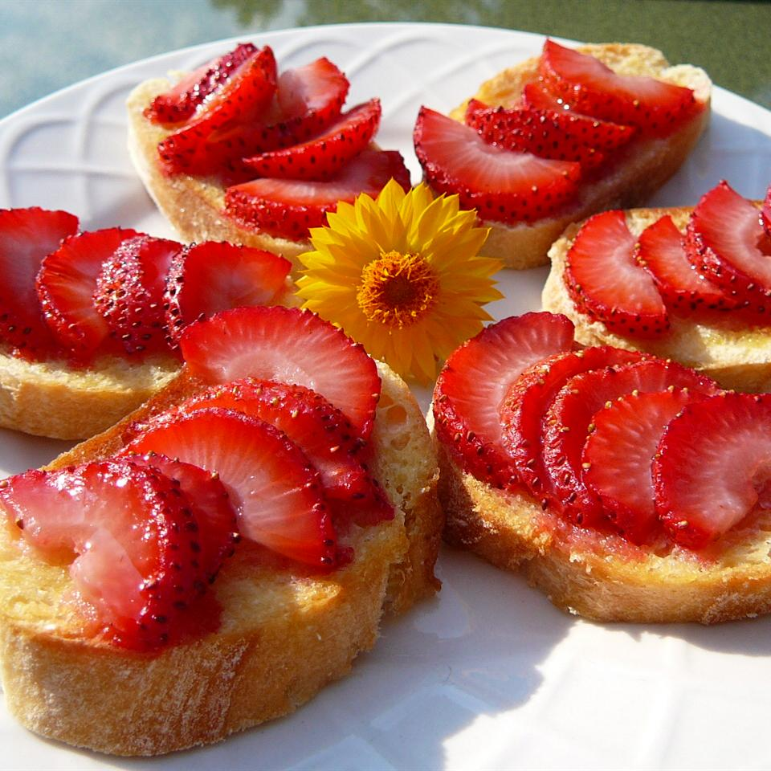

Strawberry Bruschetta

Description
This is a delicious variation of the popular
tomato based appetizer. The strawberries are
warm and sweet and the sugar is caramelized
and crunchy! Your guests will love it!
Ingredients
- 24 slices French baguette
- 1 tablespoon butter, softened
- 2 cups chopped fresh strawberries
- 1/4 cup white sugar, or as needed
Steps
-
Preheat your oven's broiler. Spread a thin layer of butter
on each slice of bread. Arrange bread slices in a single
layer on a large baking sheet.
-
Place bread under the broiler for 1 to 2 minutes, just until
lightly toasted. Spoon some chopped strawberries onto each
piece of toast, then sprinkle sugar over the strawberries.
-
Place under the broiler again until sugar is caramelized,
3 to 5 minutes. Serve immediately.
Source
Back